How to make the Falcon Paper plane: Step by Step
Instructions
- Get a piece of A4 paper, and find a flat surface for you to fold on. You will also need pen
to make folding precisely easier, and a ruler for later steps.
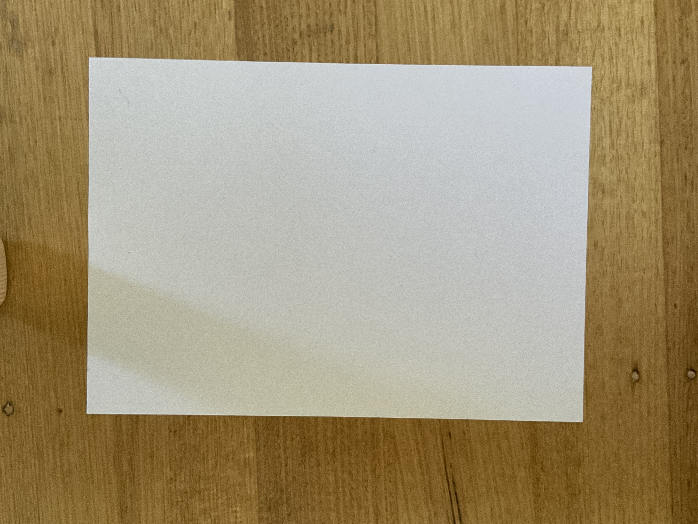
- Fold the Paper in half, then unfold.
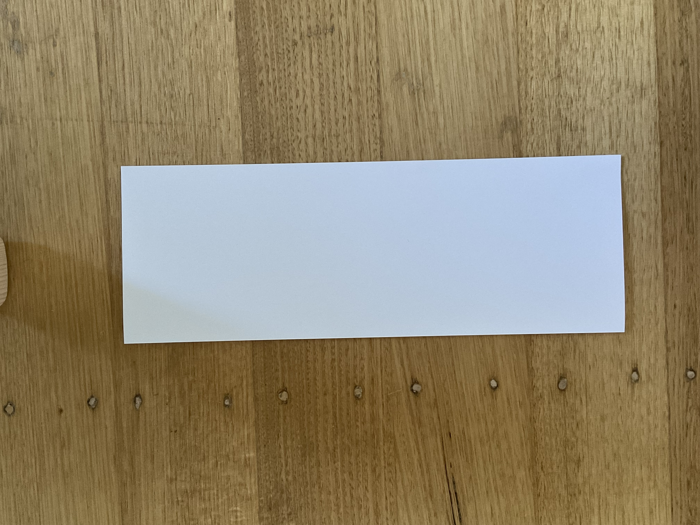
- Now, grab the top ends of the paper and fold them to make the top of the paper pointed, like so.
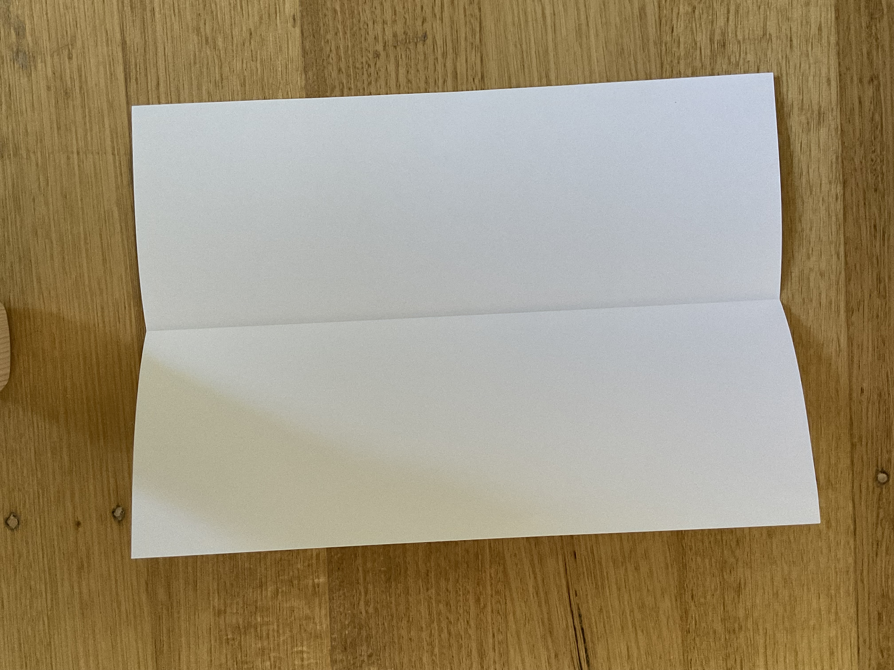
- Do the same thing again, but this time, grab the sides of the triangle and fold them, like so
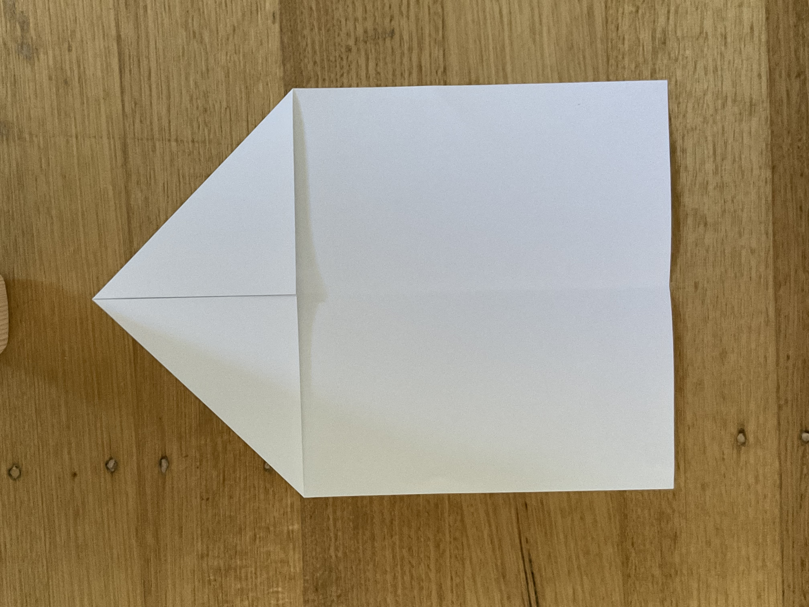
- Grab the tip of the paper and fold it down until it roughly matchs the image here.
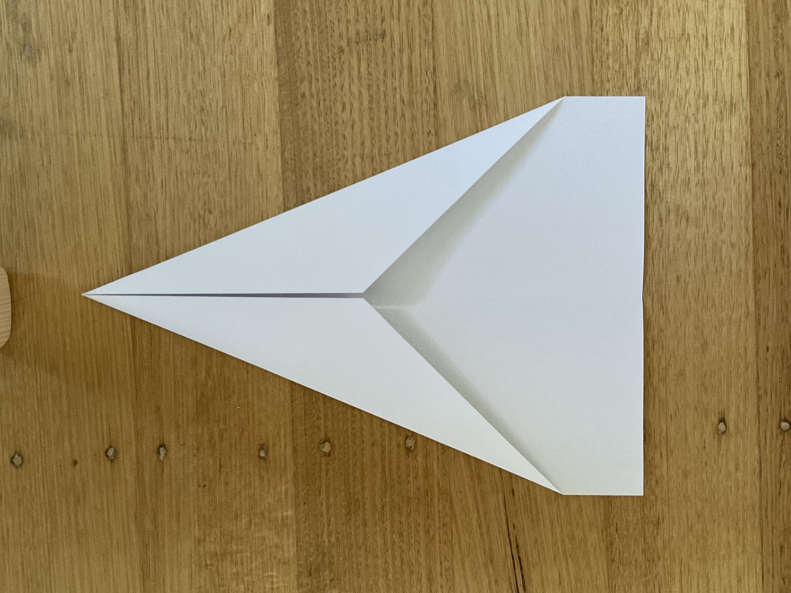
- Now, grab the the tip of the paper, and fold it up again, to roughly match the image. Unfold.
To better do the next part, draw a line with your pen where you just folded.
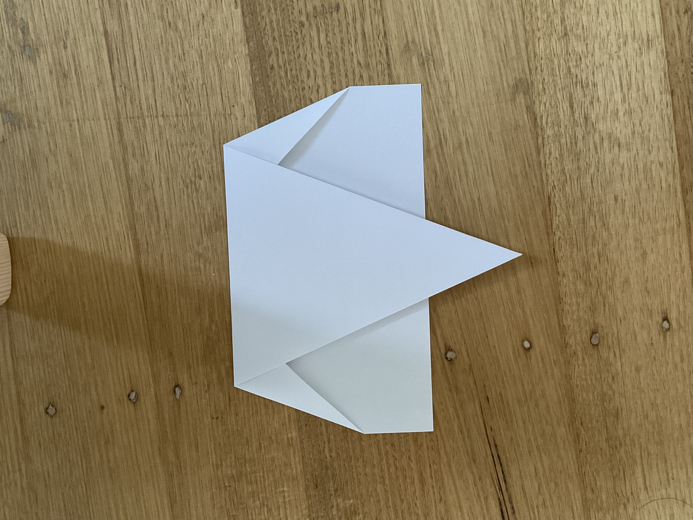
- Grab the tips of the paper at the top, and fold them to be parrallel to the line you drawed.
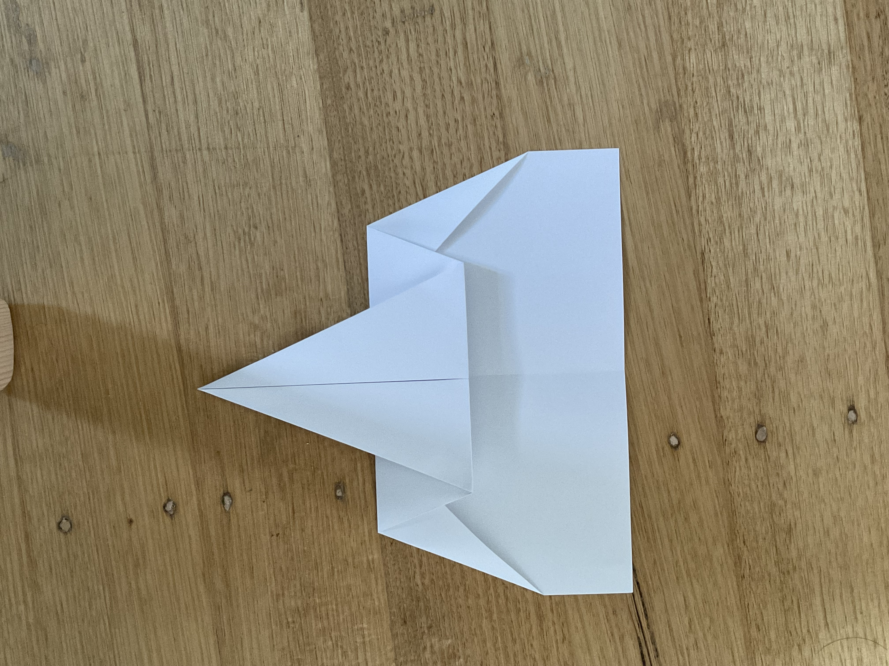
- Grab the tip of the paper and fold it up like so.
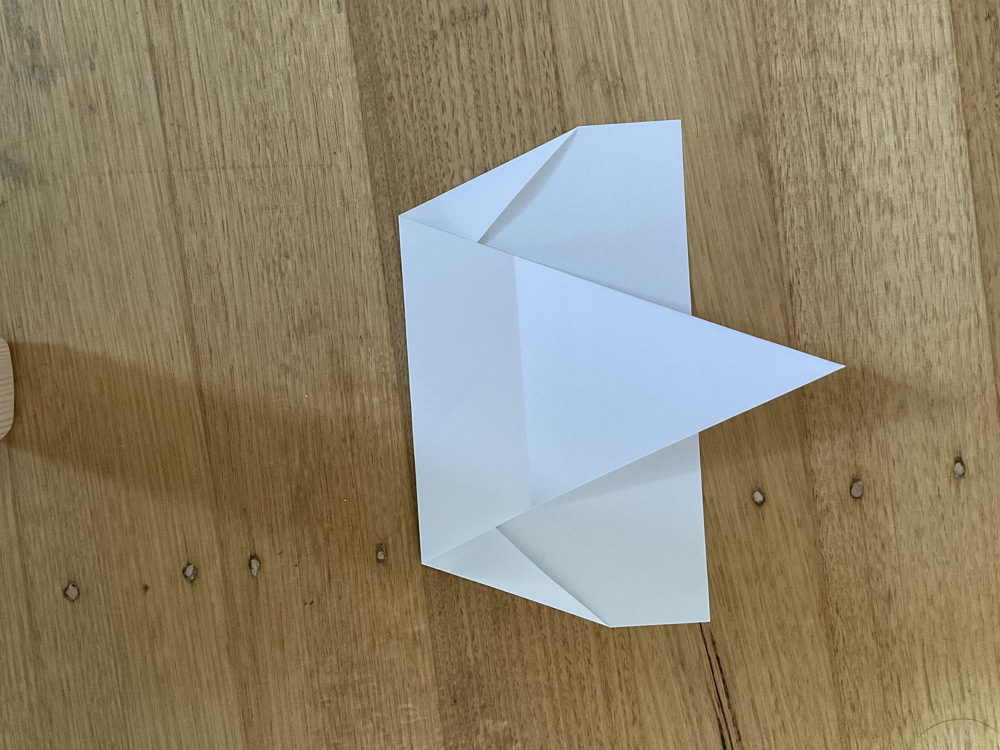
- Now fold the plane in half.
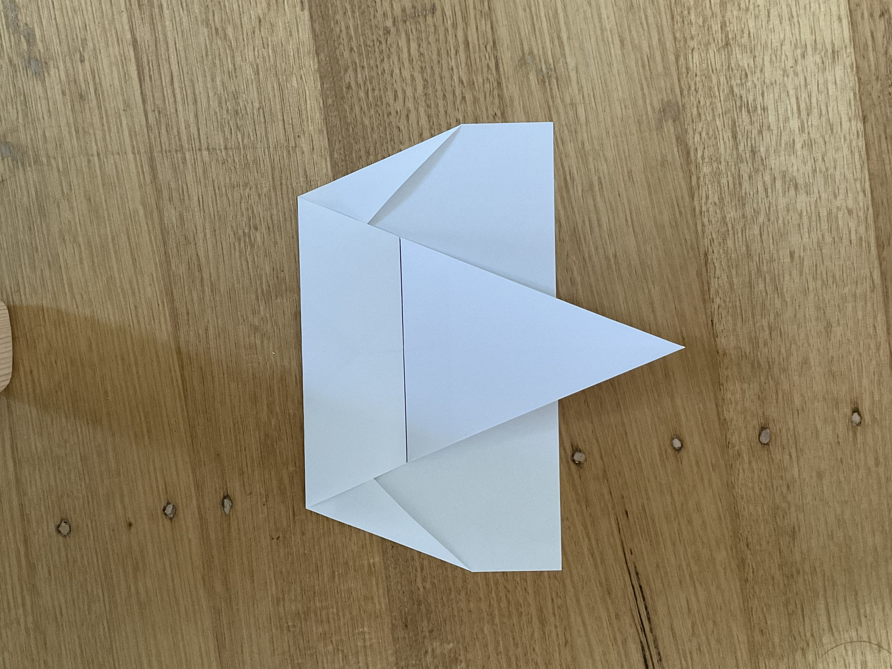
- To make the wings, you can have them as flat or as angled as you like, the only
thing you need to do is to have some of the tip of the plane folded, like in the image.
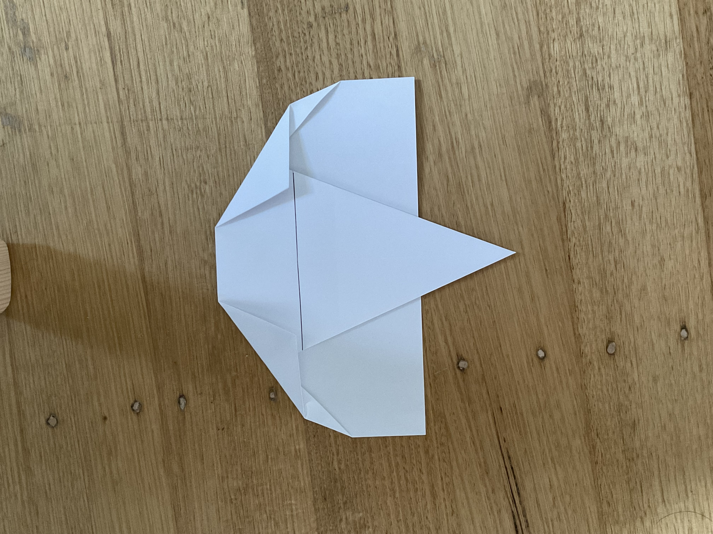
- To make to plane fly better, you have to fold a bit of the tip of the wings. to do this,
all you need to do is to measure a bit, and drawing a line would be recommended. To draw
the line, first measure 2cm out from the top circled part of the plane, and place a dot. Then
measure 0.5cm out from the bottom circled part of the plane, and place a dot. Then join
the dots together and fold. Do the same on both sides.
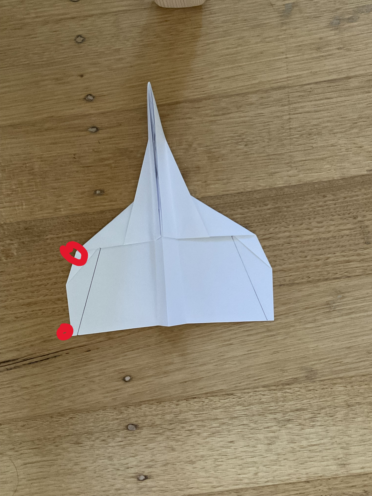
- The last step is to fold the tip of the plane at where the wings start to form. You can refer to the image to know where to fold.
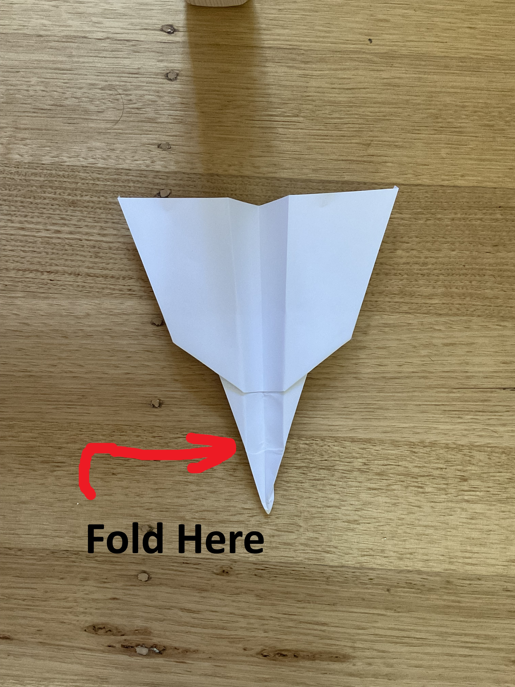
End Result
This is the end result of the steps.
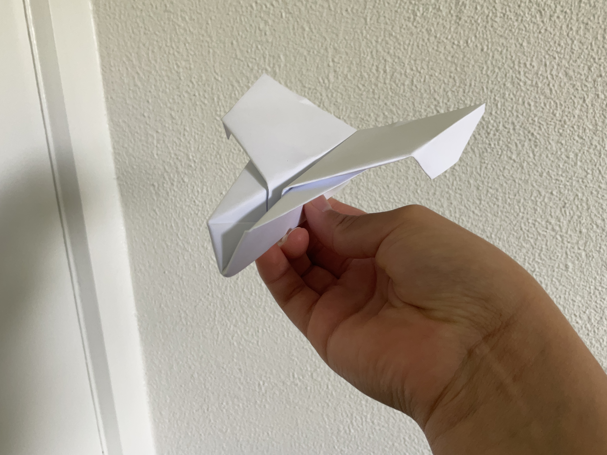